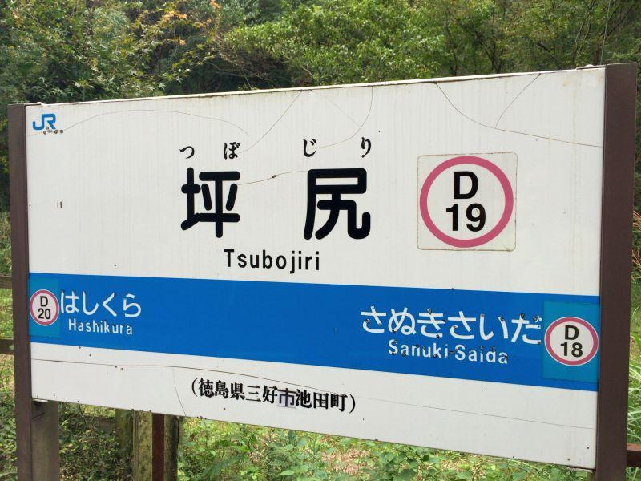
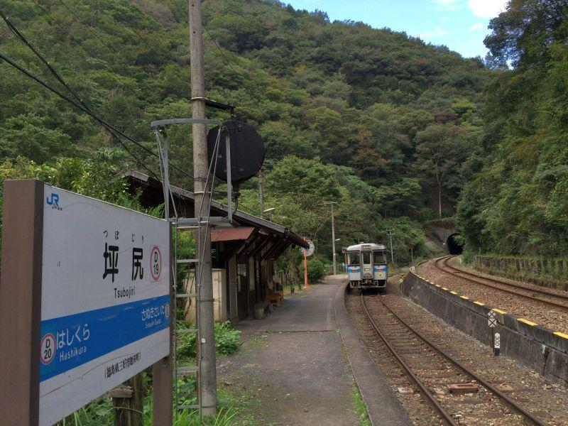
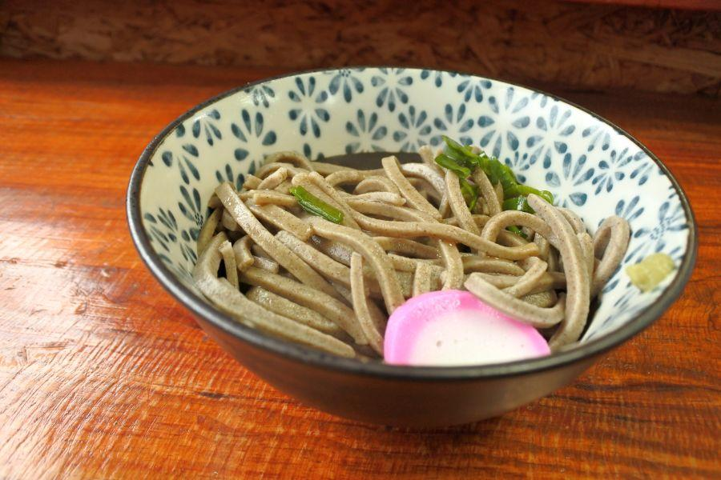
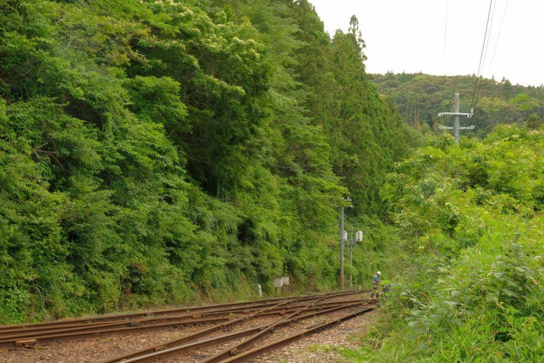
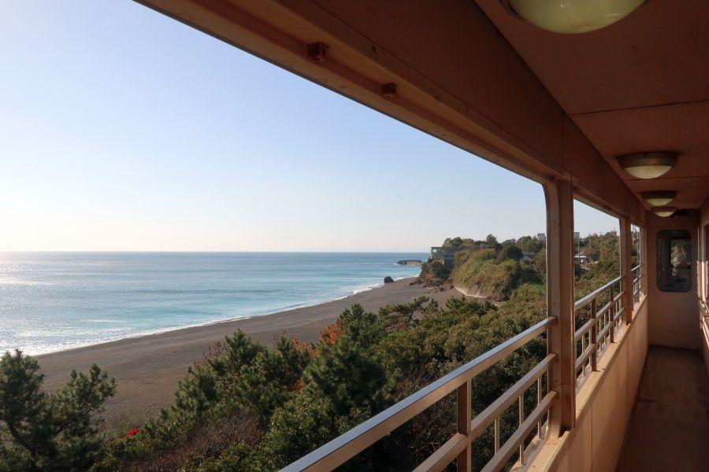
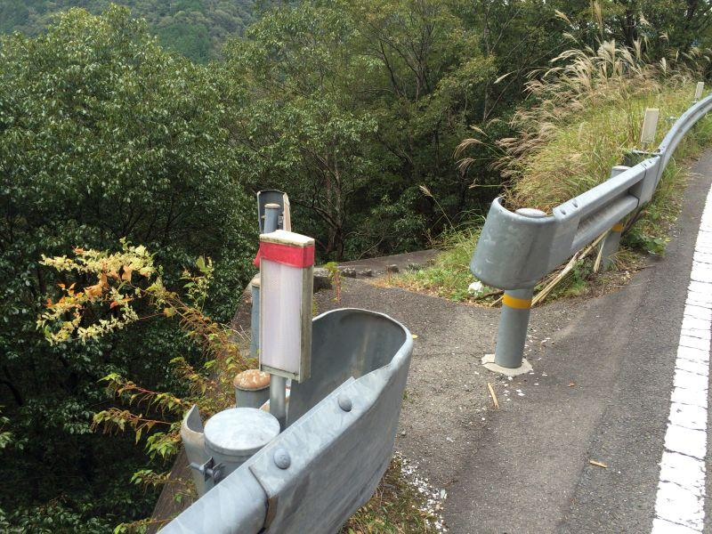

徳島県山中に位置する、国内トップクラスの秘境駅・後編 < 坪尻駅・徳島県三好市池田町 >
国内トップクラスの秘境駅「坪尻駅」へ、列車到着ではなく 国道32号から駅へ続く、山道を歩いてきました。
線路横断に注意
国道32号
↓
駅へのアクセス道(＝登山道)
↓
廃業した商店
↓
と来てこの場所に出てきます。駅へはこの踏切を渡ることになるのですが、遮断機が無ければ 警報機も無い。列車の接近放送もありません。
(※ 現在は手押し式の遮断棒が設置されているようです)
登ってくる列車(上り)は 谷間にエンジン音を響かせながら駆け上がってくるので、鉄道ファンじゃなくても なんとなくそのことに気付くことができます。
問題は下って来る列車(下り)。
坪尻駅の先(讃岐財田駅方向)がトンネルになっているので、列車の接近に気が付いた時には もうすぐそこに居る、下り坂ゆえ 自分が思っているより列車が接近するのが早い。注意深く観察していれば、トンネル内を走行している列車の音と どことなくその波動(空気感)を感じることができます。
まあ そこまで考えなくても、踏切に掲示してある列車通過時刻表と 自分の時計を照らし合わせて見て、安全が確認できてから 踏切を渡るようにしましょう。
坪尻駅

坪尻駅(つぼじりえき / 徳島県三好市池田町)
昭和4年(1929)... 坪尻信号所開設
昭和25年(1950)... 駅に昇格。坪尻駅開業
昭和45年(1970)... 無人駅化
昭和62年(1987)... 四国旅客鉄道(JR四国)に継承
平成29年(2017)... 四国まんなか千年ものがたり、運行開始。坪尻駅に停車
元祖・秘境駅

一部の無人駅が「秘境駅」と呼ばれるようになって久しい事ですが、坪尻駅は その呼称が無い時代から、鉄道愛好者たちから知られた存在だった。
人気番組「探偵！ナイトスクープ」では 平成9年(1997)に坪尻駅のことが取り扱われ、一日の平均乗降人数が「4人」との調査結果が放送されました。それは同じご夫婦が別の日に二往復した... という内容だったように思います。

その集落「木屋床(こやとこ)」へ続く道。道？？
坪尻駅は元々川だったところを埋め立てたため、水分を多く含む土地。それすなわちヘビが好む環境であり、周辺至る所に「マムシ注意」の掲示・啓発が行われている。
確かに咬傷を負うと、道路が通じていないこの場所へ 救急車が来ることはできないし、列車の本数を考えても 一刻を争う場面と言えど、救出のしようが無い。
立地だけ見ると 開設当初の信号所が、あるべき姿なように思えてきます。
が、駅に昇格したのは 住民の陳情によるもの。現在の坪尻駅を見るに 半ば信じられない経緯ですが、往時は 住民がこの駅から行商に出たり、通学・通院等の需要があったと言います。
後に集落へ続く道路が整備され、自家用車の普及と共に 鉄道を利用する者が減少していった。
と言うのは、秘境駅であるなし関わらず 全国の過疎地域ではどこも似たような状況。モータリゼーションの落とした影ですね。
坪尻駅の時刻表
(※ 現在とは異なります)
始発が遅い
終電が早い
何時間も運転されない時間帯がある
・
・
・
これは各駅停車の中にも 当駅を通過する列車があるためです。
「各駅停車」「普通」の概念を超えた存在であると言えます。
坪尻駅プラットHome

プラットHomeに出てみます。
手前左... 本線
手前右... 坪尻駅への引き込み線
奥左... スイッチバックの引き込み線
奥右... 本線
手前が多度津(香川)
奥が阿波池田(徳島)
多度津方向から来た各駅停車は 一旦奥左の引き込み線へ入って停車。進行方向を転換して、手前右の引き込み線に入ってきて坪尻駅停車。乗降を行った後、進行方向を転換して本線(阿波池田方面)へ向かう。阿波池田方面から来て坪尻駅に入るのは この逆。
いわゆるスイッチバック式の駅で、JR四国管内には二駅< 坪尻・新改 >存在。いずれも土讃線にあります。
プラットHomeから多度津方向を眺めたところ
坪尻駅への引き込み線は、当然のことながら行き止まり。一段高い場所にあるのが本線です。
これくらいの高低差だったら 駅をわざわざ引き込み線にしなくても、この延長を本線にすれば...
と思うところですが、いやいや、これは列車にとってはなかなかの高低差。
確かに現代の土木技術や車両の性能を考えるとやれなくはありませんが、讃予線(現 土讃線)敷設当時は 非力な蒸気機関車主体。坂道で停車すると再発進が困難になりますし、徐々に勾配をつけていってようやく この先の猪之鼻峠(徳島・香川県境)を超えることができました。
Homeにある JR四国特製の「らぶらぶベンチ」
今を時めく下灘駅にも、同様のものがありました。二人きりの秘密のデートには、人跡稀な秘境駅は向いているかもしれません。
※ 今はそれなりに来駅者があります
駅舎に併設のお手洗い
「便所」
「LAVATORY」
昭和を感じる 国鉄式のフォント・表現が、昭和の時代から大きく変わっていないであろう 時が止まった感を演出します。
ただ、ここで用を足すのは少し勇気が要ります。大阪弁で言うところの「手が出てきそう...」
上り列車到着

坪尻駅に、(上り)多度津行き各駅停車が入線してきました。
坂を登ってきた上り列車は、坪尻駅への引き込み線に入線して 駅に停車します。
この後 前後進行方向を転換して、引き込み線へ向かって発車。そこで再び前後進行方向を転換して、本線の坂を上って行きます。
普段はとても静かな山間の無人駅
列車が行った後の坪尻駅は、元通り 山間の秘境駅に戻りました。
坪尻駅には 固定乗降客が存在しないため、数年前までは 駅廃止が取り沙汰されていました。
しかし今は、観光特急・四国まんなか千年物語の運行コースにも 坪尻駅停車・散策が組み込まれるなど、秘境を逆手に取った観光にシフトし始めている感があります。
坪尻駅
< 自家用車 >
到達できません
< 公共交通機関 >
JR土讃線・坪尻駅下車
※ 列車の運転本数が少なく、通過する各駅停車もあります
※ 主な地点からの最速・最短距離
関連記事

2017,10/23 手作りの田舎そばを食べに、そばやへ < そばや / 徳島県 >

2017,11/26 四国の鉄道が繋がった瞬間を見届けた立会人 < 土讃線三縄駅 / 徳島県 >

2018,1/30 やまびこ打線で一世を風靡した高校がある街の珍地名 < 阿波池田駅 / 徳島県 >

2018,5/18 空から見る香川県 < 香川県中讃・西讃ほか >

2018,6/17 各駅停車が通過する駅？ 山中のスイッチバック駅 < 新改駅 / 高知県香美市 >

2018,12/8 ユニークな駅名の高知県の鉄道交通中心地 < 後免駅 / 高知県南国市 >

2019,1/1 雄大な太平洋を存分に楽しむことができるローカル線・前編 < ごめん・なはり線 / 高知県東部 >

2019,1/7 雄大な太平洋を存分に楽しむことができるローカル線・後編 < ごめん・なはり線 / 高知県東部 >

2019,1/19 静かな無人駅で、みどころを見つける旅 < 大杉駅 / 高知県大豊町 >
